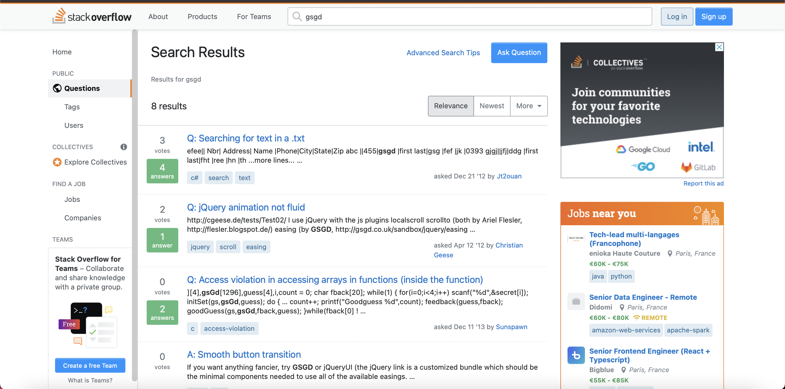

Refaire une page du site Stackoverflow
Durant ce projet, nous avons eu à reproduire la page ci-dessus. Le travail étant à faire par groupe, nous avons réparti les tâches. Chaque membre devait effectuer certaines tâches définit préalablement sur le site Trello. Ci-dessous un exemple d'une tâche que j'ai dû effectuer.